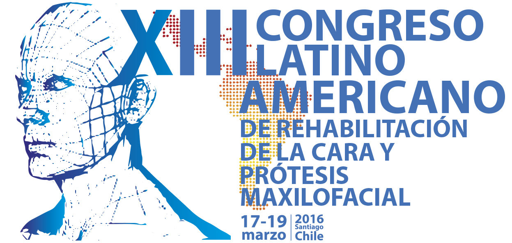
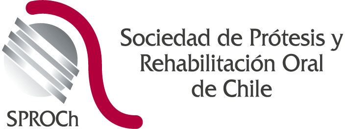
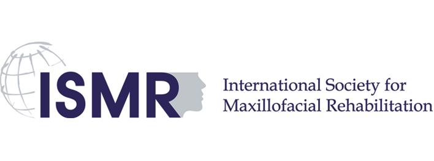
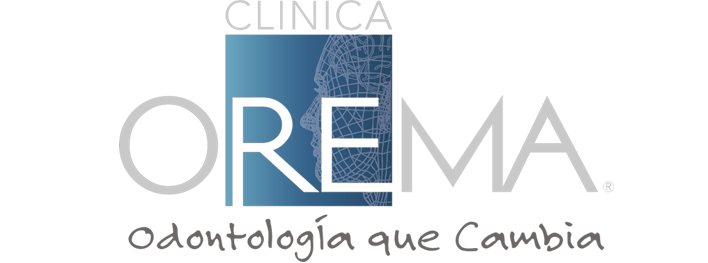
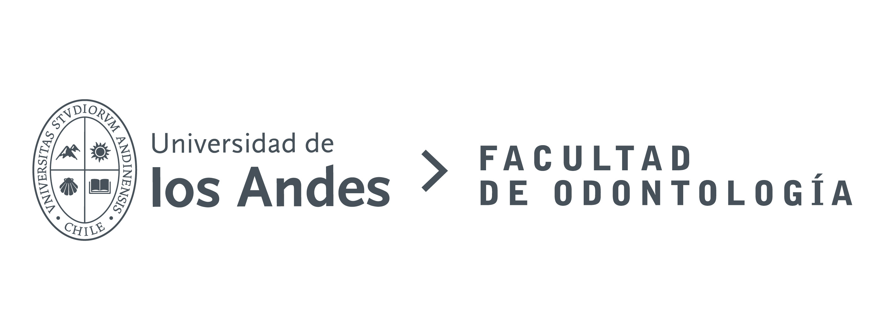
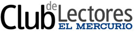

Santiago de Chile, 17, 18 y 19 de marzo
Auditorio [nombre auditorio], Universidad de Los Andes

Compartiendo experiencias sobre rehabilitación de la cara y prótesis maxilofacial
Los invitamos a ser parte del XIII Congreso Latinoamericano de Rehabilitación de la cara y Prótesis Maxilofacial, enfocado en el tratamiento interdisciplinario centrado en el paciente, en relación a la rehabilitación buco maxilofacial, donde los avances científicos en la actualidad obligan a la interacción de distintas disciplinas y tecnologías al servicio del paciente.
Organizadores



Patrocinadores

Media Partner

Programa 2016
- Jueves 17 de marzo: 8:30 a 18:00 horas – Vino de honor de 18:00 a 19:30 horas
- Viernes 18 de marzo: 9:00 a 18:00 horas
- Sábado 19 de marzo: 9:00 a 12:30 horas – Visita con almuerzo a Viña Santa Rita (no incluido en valor del congreso – participación por adhesión). Retorno al hotel, horario estimado: xx horas
Temario de Programa Preliminar:
- Tratamiento interdisciplinario de pacientes con compromiso en cabeza y cuello.
- Planificación funcional en reconstrucción maxilofacial.
- Diseño con tecnología 3D aplicado en reconstrucción facial.
- Resultados funcionales – nuevo estándar mundial.
- Avances tecnológicos en prótesis faciales.
- Tratamiento odontológico en pacientes con cáncer oral.
- Manejo del paciente irradiado.
- Implantes oseointegrados y reconstrucción maxilofacial.
- Uso de colgajos libres microquirúrgicos en reconstrucción de cabeza y cuello.
- Manejo de fonoaudiología como pilar en la rehabilitación funcional
Congreso dirigido a:
- Odontólogos
- Cirujanos Oral y Maxilofacial
- Cirujanos de Cabeza y Cuello
- Cirujanos Plásticos
- Fonoaudiología
- Diseñadores
- Tecnólogos
- Técnicos afines
Programa de Posters XIII Congreso Latinoamericano de Rehabilitación de la cara y Prótesis Maxilofacial
¡Participa y envianos tu Poster! En el botón de "Descargar Bases Programa de Posters" podrás acceder a toda la información para poder participar.
Los posters deben ser enviados al email: congreso@santiago2016.cl
Conoce y participa de nuestro programa social
Vino de Honor Universidad de los Andes
Recorrido por Viña Santa Rita
Valor de la adhesión al Programa Social (No incluido en el valor del Congreso): $65.000
El Programa Social incluye: